<<2015年12月 | トップページ | 2016年2月>>
2016年1月
お気に入りの食べもの［赤崎月香］
こんにちは ヽ(^▽^@)ノ
赤崎月香です。
初めて岩盤浴（ がんばんよく ）を体験しました！！！！！
体の中からポカポカして、
最高に気持ちが良かった～Ｏ(≧▽≦)Ｏ
また行きたいなぁ～♪
☆。・:*:・°★,。・:*:・°☆
『 お気に入りの食べもの 』
私の好きな食べものは、
焼肉でしょ～♪
お寿司でしょ～♪
ピザでしょ～♪
たくさんあります (o^∇^o)ノ
お正月に食べた、
すきやきと、おせちと、お雑煮で～す♪
じゃじゃーーーーーん！！！！！
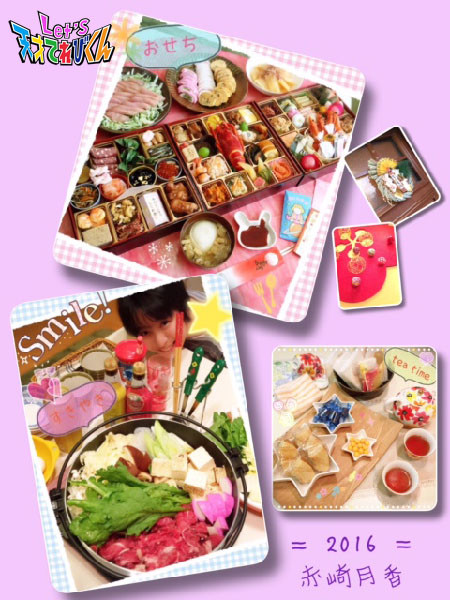
正直・・・ o(´^｀)o う～ん
おせち料理は、子どもの私には
食べられないものが多くて、
ハンバーグが食べたいなぁ
とか思っちゃいます (^-^;
でも！数の子は大！大！大好き！！
プチプチしておいしい ヾ(〃^∇^)ノ
おせち料理なら、数の子がお気に入り♪
お雑煮も好きです。
今年は、お雑煮作りに挑戦しました (*￣0￣)/
初めて作ったときは、何かが足らない感じで
微妙な味に・・・
２回目は、とってもおいしくできました！！
もう１人でもお雑煮は作れます！！ v(。・ω・。)
沖縄県にどちゃもんを探しに行ったとき、
苦手だったゴーヤが
食べられるようになりました！！
また食べたいなぁ (o^-^o)
日本各地の地元のお料理は、
そこで食べると、おいしくって
苦手なものでも食べられるようになります♪
☆。・:*:・°★,。・:*:・°☆
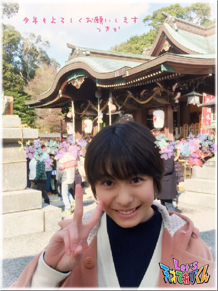
今年もたくさんのおいしい食べものに
出会えますように (*・人・*)
またね～ ヾ(*'-'*)
投稿者:赤崎月香 | 投稿時間:18時45分 | カテゴリ：てれび戦士 | 固定リンク
お気に入りの食べもの［瀧澤翼］
こんにちは！
まだ日付などを書くときに2015年と書いてしまう瀧澤翼です！
新年は千葉県の成田山へ初詣に行ってきました。
しっかりお参りをしたあとにおみくじを引いてみると・・・
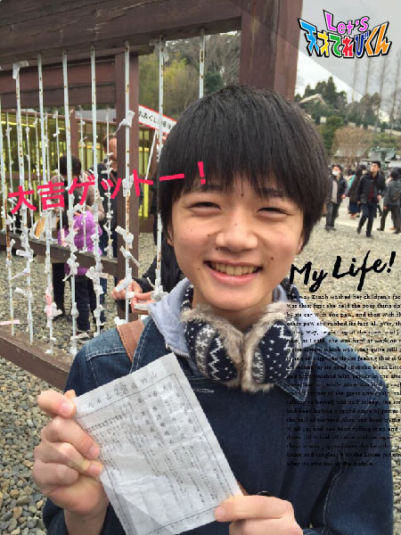
見事、大吉をゲット！！
家族で僕だけが大吉だったんですよ～！
今年も良い１年になりますように・・・。
さぁ、今回のテーマは「 お気に入りの食べもの 」ですね。
おじいちゃんのお家へ新年のあいさつに行ったとき、
衝撃的な鍋料理に出会いました！
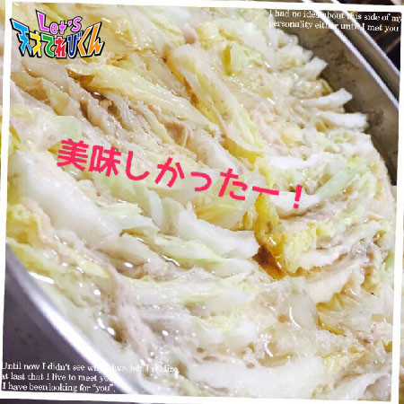
豚と白菜のミルフィーユ鍋です (^^)
見た目よりヘルシーで、おいしかったのでお腹いっぱい食べちゃいました！
新年早々、僕のお気に入りの食べものに仲間入り！！
おばあちゃんありがとう！
と、いうわけで Let's お鍋！！
投稿者:瀧澤翼 | 投稿時間:18時54分 | カテゴリ：てれび戦士 | 固定リンク
お気に入りの食べもの［齋藤茉日］
こんにちは～
茉日です＊＊
今回のテーマは
｢ お気に入りの食べもの ｣ ( ´ ▽ ` )ﾉ
やっぱり私は「 茶碗蒸し 」が好きなんですけど
前にも天てれのブログで載せたことがあるので、
今回は別の食べもの♪
お正月に食べたおいしかったものシリーズです ( ´ ▽ ` )ﾉ
まずは、これ！
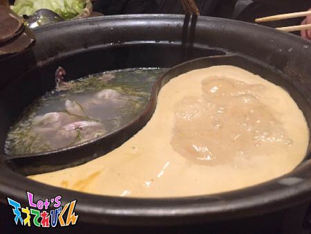
しゃぶしゃぶです (*^^*)
と～ってもおいしかったです～
また食べたい。！
お次は！
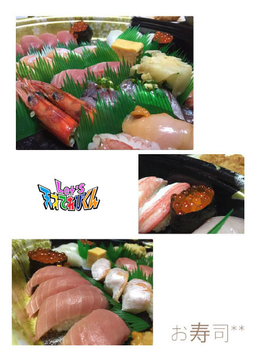
お正月におばあちゃん家でみんなで食べました！
私は１番「 うに 」が好きです (*^^*)
あと「 いくら 」も好きです (*^^*)
たくさん食べました！
最後は。。。
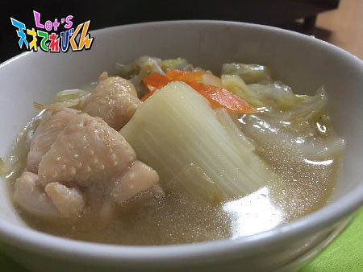
お鍋です ( ´ ▽ ` )ﾉ
やっぱり、最後に落ち着いてしまう。。。
温かくて落ち着く料理ですね～
おいしいっ！
お正月には普段はあんまり食べることのできない料理をみんなで食べられて
楽しかったです！
それでは今回はこの辺で
ほんたらまたねー
投稿者:齋藤茉日 | 投稿時間:18時45分 | カテゴリ：てれび戦士 | 固定リンク
お気に入りの食べもの［小澤竜心］
こんにちは！竜心です。
お正月は、秋田のおじいちゃん家に行きました。
今回は雪が少なくて、あまり遊べませんでした。
残念・・・・・・ (ToT)
でも、羽根つきをして、楽しかったです♪
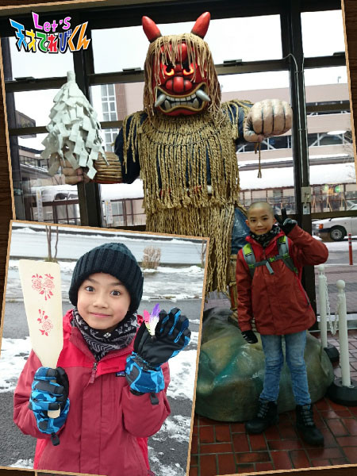
ぼくの、『 お気に入りの食べもの 』は、
【 おじいちゃんのお料理 】です！
年末に遊びに行くと、おじいちゃんが、
『 煮物 』と『 なます 』を作ってくれます。
おじいちゃんは『 煮物 』を作るときに、
ていねいにアクを取りながら、
煮くずれしないように、
全部の具がちょうどいい固さにできあがるように、
気をつけているそうです。
だしがきいていて、ぼくの口にぴったり合います！
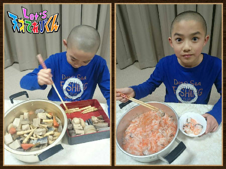
中でも、ぼくが好きなのは、
「 里いも 」、「 しいたけ 」、「 たけのこ 」です。
『 なます 』には、鮭の「 氷頭（ ひず ）」が入ってます。
氷頭は、鮭の頭の軟骨なんだってー (;゜0゜)
実は『 なます 』は、まだちょっと苦手だけど、
いつか食べられるようになりたいな。。。
そして、秋田といえば、【 きりたんぽ 】！！
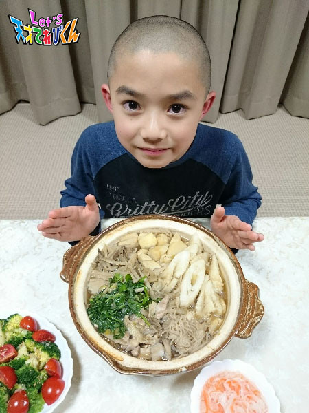
大好き～♪♪♪・・・なので、
東京でもお母さんに作ってもらうけど、
みんなで食べたら、
いつもよりもっと、おいしかったです(*≧∀≦*)
投稿者:小澤竜心 | 投稿時間:18時45分 | カテゴリ：てれび戦士 | 固定リンク
お気に入りの食べもの［桐畑カレン］
こんにちは。
カレンです (*^^*)
「 お気に入りの食べものは？ 」なんて聞かれると、たくさんあるなー。
なやんじゃう (*^。^*)
そこで今回は、記憶に新しい「 お気に入り 」をしょうかいしたいと思います。
まず１つ目は、年末年始にたくさん食べた☆ おもち ☆
おばあちゃんのお家でおもちをつきました。
せいろでもち米をむして、おもちつき機でペッタンペッタン。
あつあつのできたてのおもちは、とってもおいしかったです。
焼いておしょうゆをつけて、のりでまきまき～
きなこをたっぷり～
あまーいおぜんざい
さっぱりおぞうに
レパートリーもたくさんあります！
たくさんおもちを食べた結果、
去年は「 かがみもちみたい・・・ 」と言われた私だけど、
今年は「『 どちゃもんじゅにあ 』の“ しろ ”に似てるね 」とか
「“ ぽてばたほくほく ”の方が似てる 」とか言われました (^w^)
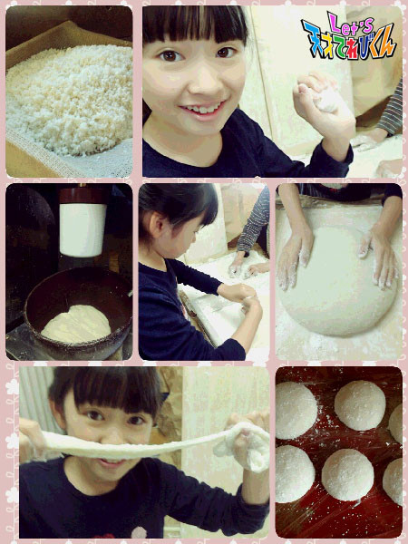
２つ目は☆ ポップコーン ☆
遊園地に行くと、私の主食はポップコーン！
というくらい大好きなんです。
そこにはポップコーンの種類がたくさんあるから、
私には「 ポップコーンの夢の国 」だったりします。
お気に入りは、ソルト味とブラックペッパー味です。
ポップコーンはあまいよりしょっぱい派なんです (⌒‐⌒)
この前も友達と遊びに行ったときに、友達をびっくりさせてしまいました。
「 いつ食べたの？！ 」と思うくらい、自然に素早く食べていて、
すごいスピードでポップコーン入れがからっぽになったからです (^_^;
映画をみるときも、必ずポップコーンは買うけど、
だいたい予告をみている間に半分はなくなっちゃうんです。
今年は映画が終わるころポップコーンも食べ終わる、を目標にしてみようかな (*^▽^)
投稿者:桐畑カレン | 投稿時間:18時45分 | カテゴリ：てれび戦士 | 固定リンク
お気に入りの食べもの［笹原尚季］
こんにちは、笹原です。
実は、すごくうれしいことがありました。
そろばんの検定があって・・・
じゃん♪♪
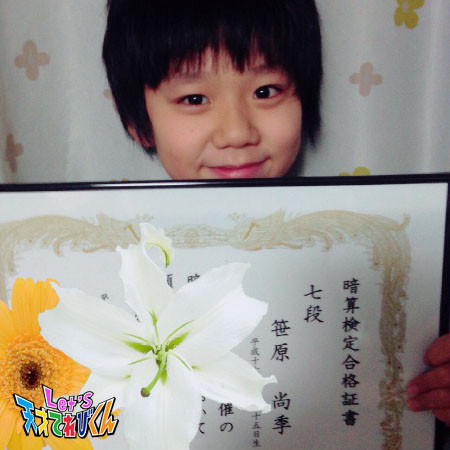
*・゜゜・*:.。..。.:*・'(*゜▽゜*)'・*:.。. .。.:*・゜゜・*
暗算７段になりました～！！
お兄ちゃんには絶対追いつけないと思っていたから、
近づけてうれしいです。
今回のお題は、「 お気に入りの食べもの 」です。
僕のお気に入りの料理は、タコライスです！
１年くらい前にタコライスを初めて食べたとき、
すごくおいしかったので、大好きになりました。
お肉の味とトマトとレタスのさわやかな味が
すごく合ってていいなぁと思いました。
それから、お母さんに何度も作ってもらっていて、今では大好物です (^^)
みなさんも、オススメの料理はありますか？
投稿者:笹原尚季 | 投稿時間:18時45分 | カテゴリ：てれび戦士 | 固定リンク
お気に入りの食べもの［飯島緋梨］
こんにちは！
飯島緋梨です ^o^
みなさんは冬休み楽しみましたか～？
緋梨は学校のお友達といっぱい遊びました！
アイススケートをしたり
お買いものしたり
デザートバイキングに行ったり・・・
とっても楽しかったです (*^o^*)
ではでは！
今回のお題は・・・「 お気に入りの食べもの 」
緋梨の好きな食べ物は～
いろいろあるけど好きな食べものは・・・？
お正月には、お正月らしい
おせち・お雑煮・おもちといろいろ食べたけど、
そろそろあきたな～と思っていたら、
お母さんに今日は何が食べたい？と聞かれました。
う～ん何にしょう？
焼肉？ カレー？ スパゲッティ？
迷ったけど【 チヂミ 】にしました！！
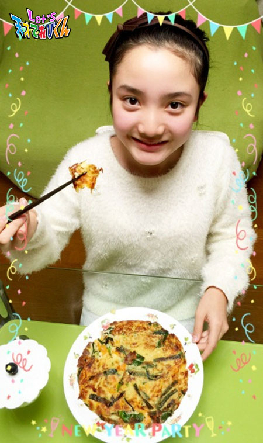
うちのチヂミには
にら・ニンジン・エノキ・山芋・エビ・イカが入っていて
カリッとトロッとしていてゴマ油がきいてていて
超おいしい♪───Ｏ（≧∇≦）Ｏ────♪
そしてもう１つが・・・
【 ピーマン 】です！！
蝶野教官の強化訓練で、
ピーマン農家の原さんのところへ行って、
ピーマンを収穫したり
ピーマン料理を作ったり食べたりして、
苦手だったピーマンが食べられるようになりました！
あれから・・・
いつものご飯のメニューにもピーマン料理が出てくるように (^^)
あの独特な苦味とシャキシャキとした歯ごたえが苦手だったのに
今では好きかも？になりました！
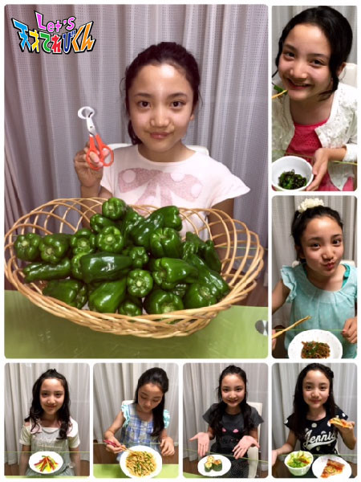
みなさんにも苦手な食べものはあると思いますが、
でもでも、お母さんと一緒に苦手な食べものの料理を作ってみてください！
自分で作った料理は一口でも食べてみれば、きっと好きになるはずです！！
ぜひ挑戦してみてくださいね (^o^)
投稿者:飯島緋梨 | 投稿時間:18時54分 | カテゴリ：てれび戦士 | 固定リンク
お気に入りの食べもの［辻村晃佑］
どうもー辻村晃佑です！
いやー、お正月はたくさんのんびりしましたよー！
おせちを食べたり、お年玉をもらったり
とにかくのんびりだらだらしていました ！
でもそのぶん、最初の学校の日の朝は
起きるのがつらかった (/´△`＼)
さて、本題です！
今回のお題は「 お気に入りの食べもの 」です！(￣▽￣)
食べものか～
正直いろいろあって迷いますね (´Д｀)
だがしかし、みなさん知ってのとおり僕は日本人です (｀・ω・)
僕の一番は、日本人がたぶん一番食べている「 お米 」です！(°д°)
さて、みなさんの予想のはるか上を越したと思うのですが、
これには理由があるんです！
あれは僕が小学4年生の頃の、少し寒くなってきたある日、
お父さんが北海道のおいしいお米を買ってきたんです。
しかしそのときの僕は
「 おいしいと言ってもたかがお米だ 」と思っていました。
それが、そのお米を炊いたご飯を一口食べた瞬間、驚きました (・◇・)
「 お米ってこんなに甘いんだ！ 」
それからお米が大好きになりました！(￣▽￣)
「 お米 」
それが僕の一番のお気に入りの食べものです (｀・ω・)
そして僕は、お米に合うおかずを作るため
料理をがんばっています！( ´ ▽ ` )
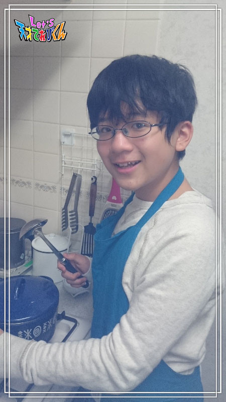
投稿者:辻村晃佑 | 投稿時間:18時45分 | カテゴリ：てれび戦士 | 固定リンク
寒い日には Let's ○○！［杉本瑛］
みなさん、グダーグ（ ノルウェー語でこんにちは ）！
杉本瑛です！
この前、瑛が11歳になりました記念で、
中田博士と藤森助手と写真を撮りました♪
２人はいつも仲良しで楽しそうです （＾ν＾）
これからもお世話になります ☆
さて、今回のお題は「 寒い日にはLet's ○○！ 」です。
私の「 寒い日にはLet's ○○！ 」は、
床暖房をつけたお部屋かお布団の中で、
のんびりくつろぐことです (⌒▽⌒)
瑛は寒がりなので、あまり家から出ないんです。
なので、ぬくぬくのお部屋で過ごします （＾◇＾）
以前ブログに書いたように、瑛は読書が好きです。
だから、お部屋で本を読んだり、
のんびりマンガを読んだりします （≧∇≦）
あと、ゆっくりとお風呂にはいるのも大好きです (*^◯^*)
厳選した入浴剤を入れて、
リラックスしながら１日の疲れをとるのが最高なんです！！
Let's お家でぬくぬく！
投稿者:杉本瑛 | 投稿時間:18時45分 | カテゴリ：てれび戦士 | 固定リンク
寒い日には Let's ○○！［小西憧弥］
こんにちは！憧弥です。
最近、寒くなってきたから、
学校に行くときはネックウォーマーと手袋とカイロ！
めちゃくちゃあったかくして登校します。
(^o^) ～あったかいんだからぁ～♪
本題「 寒い日にはLet's ○○！ 」です。
学校から帰ってきたら
ランドセルを置いてすぐに遊びにいっちゃうけど、
寒い休みの日は、外に出る気がしないので、
そんなときは家の中で、おもちゃのピストルで的当てをして遊んでます！
夏のお祭りの夜店でくじ引きで当てたものです (^-^)/
紙の的を作って、当たったら的を貫通して向こうの箱に入るように考えました！
的は、紙に書いて何枚もコピーしました！
的から外れると、探すのが大変だから、よーくねらって撃ちます！
ほぼ当たるから、ちょっとずつ離れて撃ちます。
楽しいよ。
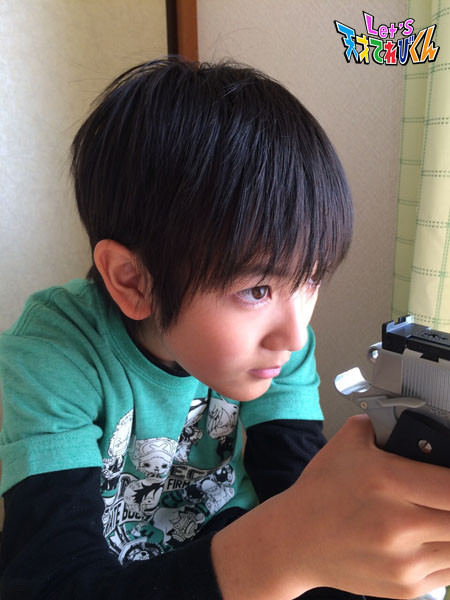
あとは・・・ゲームをしたり、
録画しておいた映画（ アクション系 ）をのんびりみるのも好きです。
そのときは好きな毛布にくるまってみるのが最高！
寒い冬はふわふわ、もこもこが好きです (^-^)/
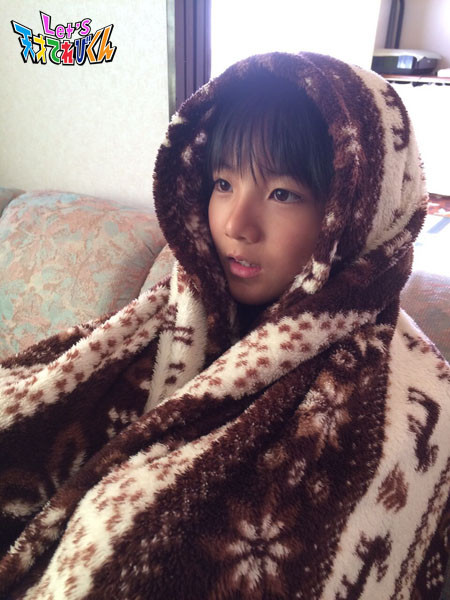
投稿者:小西憧弥 | 投稿時間:18時45分 | カテゴリ：てれび戦士 | 固定リンク
寒い日には Let's ○○！［原田明莉］
☆ Hello ☆
明莉です！
今回のテーマは
「 寒い日にはLet's 〇〇！ 」
です！
最近の私は、寒い日にはテンションが上がってしまって
自動的に体がポカポカしてきます！笑
テンション上がらないひともいると思うので！
寒い日にとっておきのものを紹介したいと思います！
それは、
ご飯をよく食べることです！！！
寒くて空も少し暗めだとドンと寒さを感じます
だけど！
ご飯をたくさん食べることで体は温かくなるし、
元気がでてきます！
何事も楽しむことができて、
寒さなんて吹っ飛んでしまいます！
私、ご飯をたっくさん食べます！
特に学校の給食などはモリモリ食べます！
だから寒くたって昼休みは外で遊ぶこともあります！
なので、寒い日には、Let's
モリモリご飯！！！
です！
最近は寒くなっていますので
風邪などにも気をつけて
元気な毎日をおくりましょう！！！
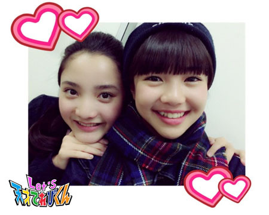
私と飯島ちゃん♪
いつもめちゃめちゃ元気です！
みなさんがいつも寒い日にしていることはなんですかー？
投稿者:原田明莉 | 投稿時間:18時45分 | カテゴリ：てれび戦士 | 固定リンク
寒い日には Let's ○○！［小澤竜心］
こんにちは！竜心です。
2016年ヽ(^○^)ノ
あけましておめでとうございます！！
今年も、お願いいたします。
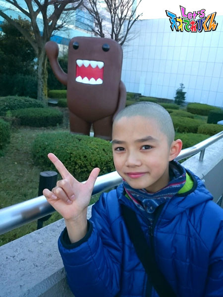
寒いですね～。
こんな寒いときの、ぼくのおすすめは、
『 Let's！競歩（ きょうほ ）！！ 』
『 競歩 』は、どっちかの足が、
必ず地面についていなければいけない早歩きです。
寒くて寒くて、
歩くのがイヤだなぁ・・・って思う日でも、
この歩きかたをすると、
すぐに体があったかくなって、楽しくなります♪
ずんずん、ずんずん、リズムよく進んで、
目的地に着くのも早くなるし、
うでを大きく振って、全身の運動にもなるので、
すっごく気持ちいいですよ～♪ ヽ(´▽｀)/
そして寒い日でも、ぼくは・・・
『 Let's！坊主！！ 』
「 頭、寒そうだよねー ＼(゜o゜;)/ 」って、
よく言われるんですけど、意外と平気なんです。
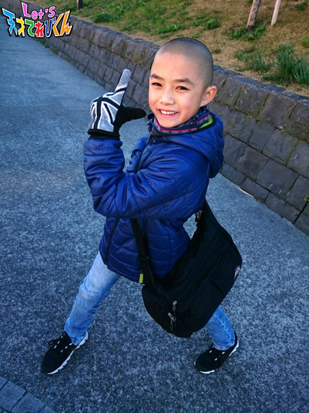
ずっと坊主だから、きたえられたのかなσ(*´∀｀*)
寒い日も、いつでも、元気いっぱいです！！
投稿者:小澤竜心 | 投稿時間:18時54分 | カテゴリ：てれび戦士 | 固定リンク
寒い日には Let's ○○！［齋藤茉日］
こんにちは～＊＊
茉日です ( ´ ▽ ` )ﾉ
今回のテーマは『 寒い日にはLet's ○○！ 』
私にとって、寒い日といえばマフラーです (^ ^)
（ 左ハンドルじゃないです汗。カメラの性能で逆になってます。。）
このピンクのマフラーは、去年買ってもらいました＊＊
学校にも身につけて行っています ( ´ ▽ ` )ﾉ
でも、寒いときにマフラーなんて
普通でしょ！
と思った皆さん。。。多いと思います笑
私もそう思ったので笑
なのでもう１つ♪
寒い日にぴったりなのは
ホットココア。
ホッと（ ホット ）しますよね～＊＊笑
かじかんだ手も、温かくなります (*^^*)
一昨年（ おととし ）は、30センチくらい雪が積もりました～
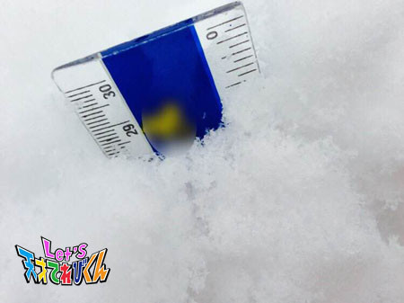
こんな冬も、マフラーとココアでのり切れちゃいますね＊＊
あとは寝るときに湯たんぽをセットしたら完ぺきです (^ ^)
風邪には気をつけてくださいね！
今回はこの辺で
またね！
投稿者:齋藤茉日 | 投稿時間:18時45分 | カテゴリ：てれび戦士 | 固定リンク
寒い日には Let's ○○！［林武尊］
こんにちは林武尊です！！
この前、カレンとピザを食べに行きました！！
牛カツを食べようと思っていたけどめちゃくちゃならんでて、
結局ピザにしました・・・
でもおいしかったです！！
さて本題へ。
今回は「 寒い日にはLet's ○○ 」です！！
僕のLet's ○○は・・・
ずばり、石油ストーブと湯タンポです！！
僕は寒がりなんで、家に帰ったらすぐにストーブをつけます。
エアコンは、あんまり好きじゃないので・・・
石油ストーブは、火が出るのでよーく気をつけています。
でも、石油ストーブの匂いは
これからあったかくなる感じで好きなんです （≧∇≦）
寝るときには、ストーブを消して湯タンポに交代します！！
お布団の中では湯タンポがあったかくて気持ちいい～
けとばして、朝はお布団の外に出てることが多いけど (⌒-⌒; )
みなさんは寒い日はどうやって過ごしますか？
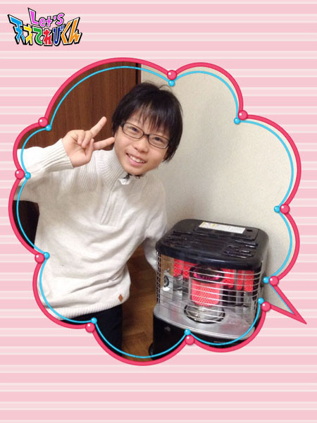
投稿者:林武尊 | 投稿時間:18時45分 | カテゴリ：てれび戦士 | 固定リンク
寒い日には Let's ○○！［飯島緋梨］
明けましておめでとうございます。
今年も宜しくお願いします。
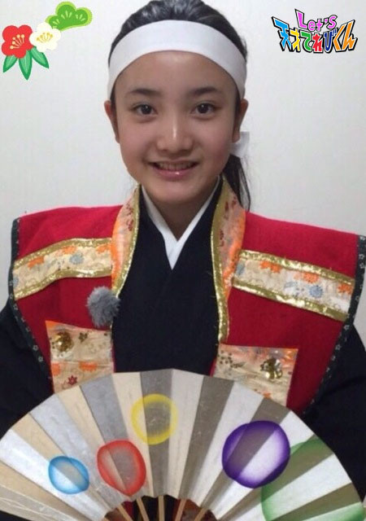
今年はさる年！
緋梨の干支です (^o^)
本当に本格的な冬到来！！
寒くて寒くて寒すぎる（ 涙 ）
というわけで今回のお題は
「 寒い日にはLet's 〇〇！ 」
でもこんな寒いときにこそできる遊び
それはスキーやスケート (,,•﹏•,,)
緋梨はスケートが好きです。
毎年、お友達やいとこ達と遊びに行きます。
みんなでスケートしながらの鬼ごっこ！
転びそうで転ばないスリルが楽しい。
スケートって、すべりだすと汗かいちゃうほど、
夢中ですべっちゃう！
今年も行きたいな。
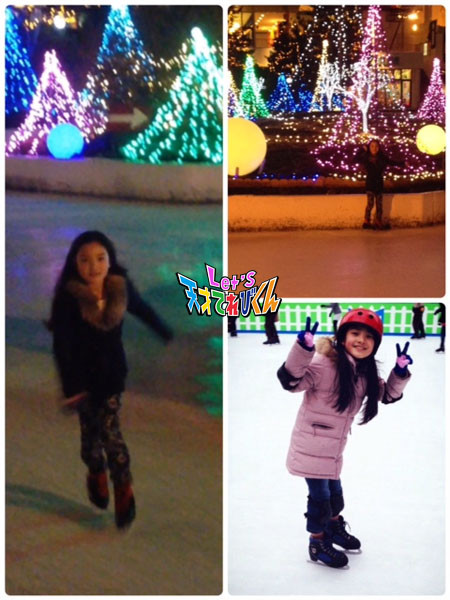
寒い日にはLet's スケート！
投稿者:飯島緋梨 | 投稿時間:18時45分 | カテゴリ：てれび戦士 | 固定リンク
寒い日には Let's ○○！［辻村晃佑］
どーもー辻村晃佑です！
ついこの前、スケートリンクに行ってきました！(*´∀`)♪
ぼく、実はスケートをやったことがなかったので
人生で初めてのスケートでした！
スケートをやる前に他の人のを見てると
「 めっちゃ簡単そうじゃん 」「 １日で完ぺきにすべれそう 」と思っていたんですけど
まずスケート靴をはいた瞬間、バランスをとるのが難しくて
何度も転びそうになりました(・_・)
「 これがスケート界の洗礼か (゜_゜;) 」
ふらふらしながら何とかリンクに降りたら
足が思うように動かず、手すりから離れることができませんでした。
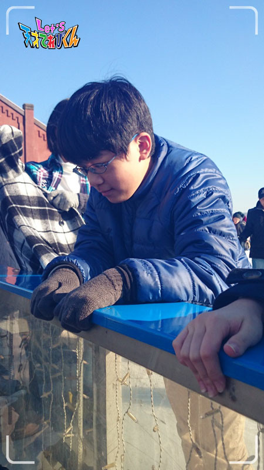
だんだん氷のツルツル感に慣れてきてから、
ちょっと離れようかなーと思って手すりから離れようとしても、
生まれたての子鹿状態で、すぐ手すりにつかまらないと転びそうでした ( ；∀；)
さすがにこのままではまずいと思っていたら、
近くにいた親子がすべりかたの話をしているのが聞こえてきて！
その話のおかげでコツをつかみました！ ( ´,_ゝ`)
それからは手すりにつかまらずになんとかすべれるようになりました！
生まれたての子鹿から生後１日の子鹿に進化しましたよ (^-^)v
あの親子にはとっても感謝 _(._.)_
すいすいすべれたらもっと楽しいと思うので、
今度スケート教室にいってみようかな～
さて、スケートの話題で長くなったけど本題です！
「 寒い日にはLet's ○○！ 」 かー
寒い日は、あたたかい家でのんびりごろごろするのもいいけど、
外で体を動かすのもいいかもな～
この前みたいにスケートをやると、
寒い日でもポカポカして上着も脱いじゃうぐらい体が温まりますよ！( ´∀｀)
今年の冬はアウトドアを楽しもうかな！
みなさん、寒い日に外出するのもいいけど
風邪には注意してくださいね！
投稿者:辻村晃佑 | 投稿時間:18時45分 | カテゴリ：てれび戦士 | 固定リンク
寒い日には Let's ○○！［赤崎月香］
☆ あけまして
おめでとうございます ☆ヽ(^▽^@)ノ
赤崎月香です。
みなさんは、どんなお正月をすごしましたか？
赤崎家の大晦日 （ おおみそか ） は、紅白歌合戦を見ながら
すき焼きを食べます♪
赤崎家の決まりです！！！Ｏ(≧▽≦)Ｏ
すき焼きを食べすぎて、
年越しそばがちょっとしか食べられないのも、
眠気に勝てず、うとうとしながら
除夜の鐘を聞くのも、
私の毎年の決まりです！！！ o(;△;)o
お正月は、おせちとお雑煮を食べます♪
今年のおせちは、超豪華でした！！！ ヽ(*'0'*)ツ
おせち料理には、それぞれ意味があるんだよ。
私は、数の子が大好き♪
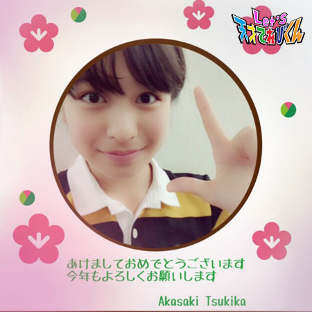
初詣 （ はつもうで ） の長い列に並ぶのは、
寒くて途中で帰りたくなるけど、
家族でお参りするのも
赤崎家の決まりです！！ *.:*:.。.: (人 *)
☆。・:*:・°★,。・:*:・°☆
『 寒い日にはLet's ○○！ 』
寒いの大っキライ！ (((=_=)))
ずっとヒーターの前でゴロゴロしていたい！
「 寒いのイヤだなー・・・ 」って言ったら、
お母さんがホットミルクを作ってくれました♪
これが最高においしくて、ハマっています (*^-^)
牛乳を電子レンジで温めて、
ちょっとお砂糖を入れるだけ～
超簡単♪
それをブランケットにくるまって、
ふ～ふ～しながら飲むのがサイコー！！ ■Dヾ(∇⌒*))))
牛乳を温めると、膜ができますよね？！
キライな人が多いと思うけど、
私は、これが大好きなんです o(*^▽^*)o
寒い日には、Let's ホットミルク！
みんなも飲んでみてね (ё。-)・・☆
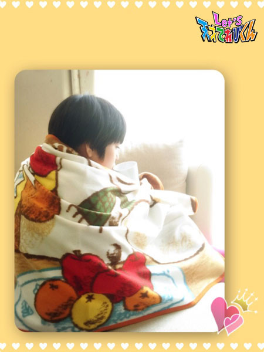
☆。・:*:・°★,。・:*:・°☆
４月の中学３年生から、生徒会役員に選ばれました！
２年生の冬休みから、
生徒会の仕事が始まっています。
今年は、学校も勉強も忙しくなると思うけど、
私らしく♪
ニコニコ笑顔で頑張ります！！！ (*^0^*)ノ
今年もよろしくお願いします。m(._.*)m
またね～ ヾ(*'-'*)
投稿者:赤崎月香 | 投稿時間:18時54分 | カテゴリ：てれび戦士 | 固定リンク
寒い日にはLet's ○○！［笹原尚季］
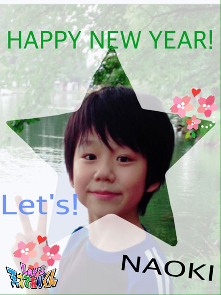あけましておめでとうございます。
今年もみんなで一緒に、地球の未来を守りましょう！
クリスマスにはアイスケーキを食べて、
年末は群馬のおじいちゃんとサッカーをしたり、
道の駅で買いものしたり
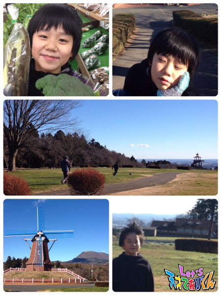右上の写真は、
焼きまんじゅうが食べられなくてがっかりの僕です。
残念 (>_<)
遊びもお手伝いも、たくさんしました！
今回のお題は、「 寒い日にはLet's ○○！ 」です。
僕が寒い日にすることは・・・
外で遊んだり。
それと、温かい紅茶を飲んだり。
あと、すき焼きとか、お鍋とか、シチューとか、
湯気がほわぁ～～ってなるものを食べたり。
寒い日には最高です♪
他にも、こたつでみかんとかもいいなぁー
あ、あと！！
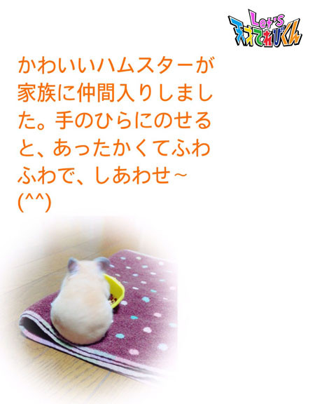
投稿者:笹原尚季 | 投稿時間:18時45分 | カテゴリ：てれび戦士 | 固定リンク
寒い日には Let's ○○！［桐畑カレン］
あけましておめでとうございます。
カレンです (*^^*)
今年もよろしくお願いします m(__)m
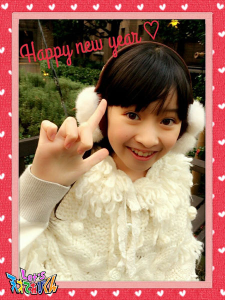
今回のお題は「 寒い日にはLet's ◯◯！ 」ですね。
寒い日・・・寒い日・・・みなさんは何をしますか？？
私はこれです ＼(^o^)／
寒ーい冬の朝は、もふもふのお布団の中で・・・
Let's まったり！
まったりタイムでーす。
そのために起きる時間を早めているんですよ。
お布団から出たら、
次はリビングに置いてあるもこもこブランケットを頭からすっぽりかぶって、
もこもこしながら・・・
Let's 猫のまね！
ただゴロゴロ～ゴロゴロ～としているだけなんですが (^o^;)
そんなことをして遊んでいると遅刻しそうになって、
「 早くして。遅れるよ！ 」
とお母さんに注意されます。
そのときは、
「 シャーッ 」と、いかくする猫のまねをしながら、
朝の準備を始めます。
いかくする猫のまねはちょっぴり顔が疲れます (^^;
猫のまねはなんとなく始めたんですが、
自分のなかでブームになってしまいました (´∇｀)
私の冬の寒い朝はこんな感じです (^^)
お家の中は、
ポカポカしていて♪
もこもこしたグッズがたくさんあって♪
お外に出たくなくなる誘惑がたくさん。
だけどお友達と遊ぶときは、
どんなに寒くても、うきうき出かけていきます。
不思議ですね ☆
投稿者:桐畑カレン | 投稿時間:18時45分 | カテゴリ：てれび戦士 | 固定リンク
寒い日には Let's ○○！［瀧澤翼］
こんにちは！
年末年始はいかがお過ごしでしたか？
先日、千葉県の「 芝山はにわ道 」を車で通りました！
その名の通り、いたるところにはにわを発見 ∑(ﾟДﾟ)
というわけでパシャリ（＾ν＾）
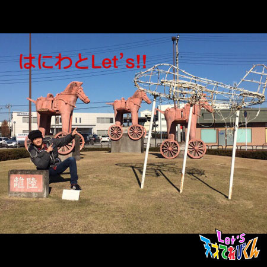
そういえば番組内でも、はにわがときどき登場してますよね。
さて今回のテーマは「 寒い日には Let's ○○！ 」です。
寒くて目覚めが悪い朝ってありますよね。
そんな朝に、僕は決まってココアを飲んでいます！！
体も温まって目も覚めるし、冬はココアが欠かせません。
小さい頃にお父さんからココアをすすめられ、
それ以来、僕の定番になっています！！
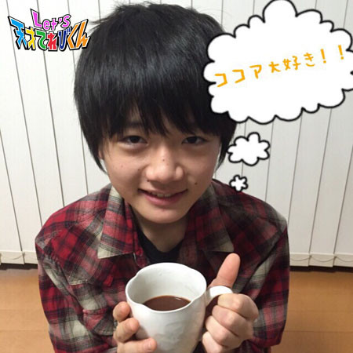
と、いうわけで、寒い日にはLet’s ココア！！
投稿者:瀧澤翼 | 投稿時間:18時45分 | カテゴリ：てれび戦士 | 固定リンク
ページの一番上へ▲